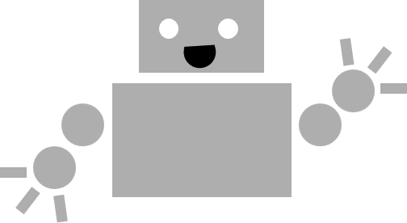

Hi! My name is Sandra Liu and I am a robotics researcher.
I went to Caltech for my undergrad and majored in Mechanical Engineering. From there, I joined MIT as a PhD student in Professor Edward (Ted) Adelson's lab.
In my PhD at MIT, I worked on the design and manufacturing of soft robotic grippers with high-resolution tactile sensing. The tactile sensors I developed were inspired by the GelSight sensors created by the Adelson Lab. You might know them for their fun-looking rainbow patterns!
Currently, I am a Roboticist at RAI Institute (formerly known as BDAII), where I work on designing handheld robotic grippers for data collection.
I love photography, designwork (i.e. doodling  ), weightlifting, and green rocks. During the winter season, you might find me skiing; during the rest of the year, you might find me doing some combination of climbing, swimming, and very intro level gymnastics.